divraster-vignette
Flávio M. M. Mota, Neander M. Heming, and Gabriela Alves-Ferreira
2023-08-25
Source:vignettes/divraster-vignette.Rmd
divraster-vignette.Rmd1 Introduction
Macroecological studies have been increasingly utilized in the
context of climate change, necessitating the use of tools to analyze
large datasets. To examine and comprehend the intricate mechanisms that
underlie species distributions and the structure of biological
communities, a diverse array of metrics has been developed. These
metrics encompass alpha and beta diversity patterns across taxonomic
(TD), functional (FD), and phylogenetic (PD) dimensions. The package
divraster addresses a current gap in this field by offering
functions to calculate diversity metrics directly from rasters,
eliminating the need for matrix transformations. This capability is
especially valuable when dealing with extensive datasets, as matrices
often impose memory constraints.
2 Alpha calculations
Alpha diversity calculations use a tree-based approach for taxonomic (TD), functional (FD), and phylogenetic (PD) diversity. In the FD calculation, a species traits matrix is converted into a distance matrix and clustered to produce a regional dendrogram (i.e. a dendrogram with all species in the raster stack) from which the total branch length is calculated. When calculating FD for each community (i.e. raster cell), the regional dendrogram is subsetted into a local dendrogram containing only the species present on the local community, and only the branch lengths connecting them are summed to represent the functional relationships of the species locally present. Similarly, in PD, the sum of branch lengths connecting species within a community represents their shared phylogenetic relationships and cumulative evolutionary history. Alpha TD can also be visualized using a tree diagram, where each species is directly connected to the root by an edge of unit length, reflecting the number of different taxa in the community (i.e. species richness) since all taxa are at the same level.
2.1.1 Alpha TD
# Loading data
# Presence-absence SpatRaster
bin1 <- terra::rast(system.file("extdata",
"ref_frugivor.tif",
package = "divraster"))
bin2 <- terra::rast(system.file("extdata",
"fut_frugivor.tif",
package = "divraster"))
# Change extension to process faster
terra::ext(bin1)
#> SpatExtent : -41.875, -38.75, -21.375, -13 (xmin, xmax, ymin, ymax)
e <- c(-41, -39, -15, -13)
bin1 <- terra::crop(bin1, e)
bin2 <- terra::crop(bin2, e)
# Species traits
traits <- read.csv(system.file("extdata",
"traits_frugivor.csv",
package = "divraster"),
sep = ";",
row.names = 1)
# Phylogenetic tree
tree <- ape::read.tree(system.file("extdata",
"tree_frugivor.tre",
package = "divraster"))
# Alpha TD calculation for scenario 1
alpha.td <- divraster::spat.alpha(bin1)
alpha.td
#> class : SpatRaster
#> dimensions : 16, 16, 1 (nrow, ncol, nlyr)
#> resolution : 0.125, 0.125 (x, y)
#> extent : -41, -39, -15, -13 (xmin, xmax, ymin, ymax)
#> coord. ref. : lon/lat WGS 84 (EPSG:4326)
#> source(s) : memory
#> name : Alpha_TD
#> min value : 0
#> max value : 67
terra::plot(alpha.td, main = paste0(names(alpha.td), "_sce1"))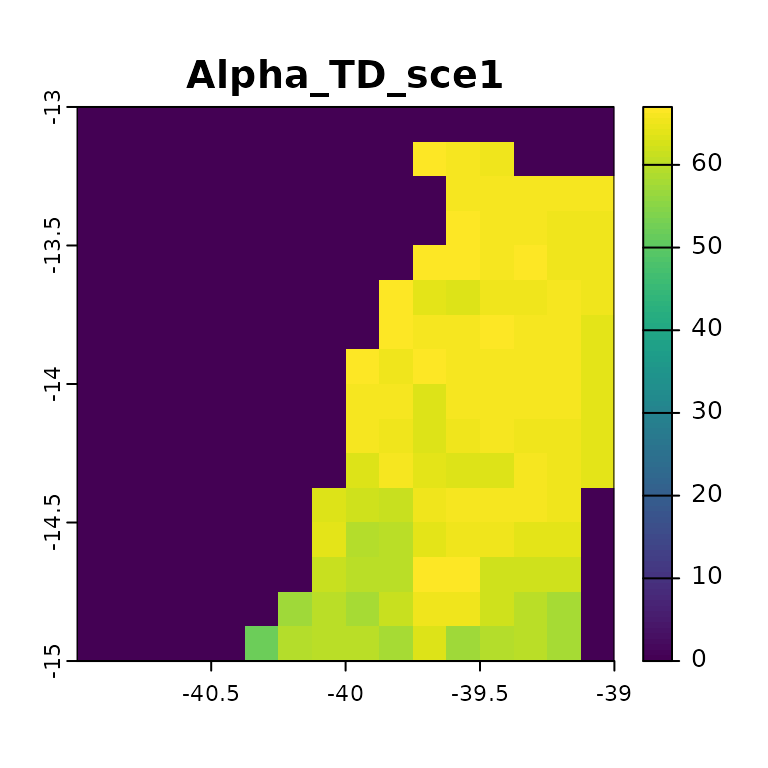
# Alpha TD calculation for scenario 2
alpha.td2 <- divraster::spat.alpha(bin2)
alpha.td2
#> class : SpatRaster
#> dimensions : 16, 16, 1 (nrow, ncol, nlyr)
#> resolution : 0.125, 0.125 (x, y)
#> extent : -41, -39, -15, -13 (xmin, xmax, ymin, ymax)
#> coord. ref. : lon/lat WGS 84 (EPSG:4326)
#> source(s) : memory
#> name : Alpha_TD
#> min value : 0
#> max value : 65
terra::plot(alpha.td2, main = paste0(names(alpha.td2), "_sce2"))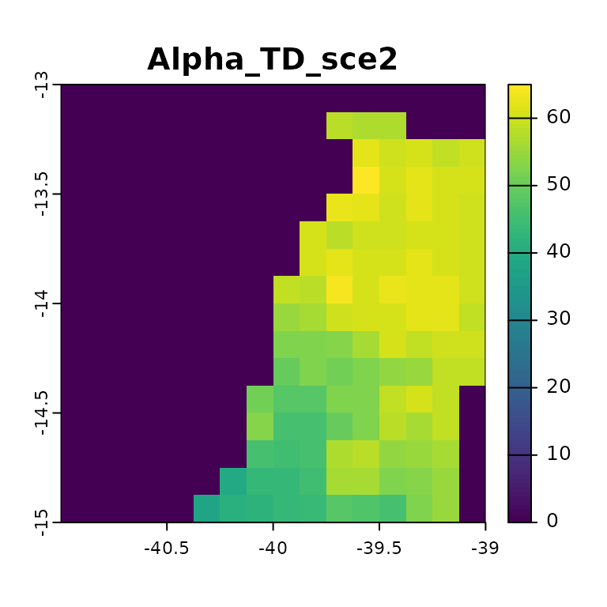
# Difference in Alpha TD between scenarios
alpha.td2-alpha.td
#> class : SpatRaster
#> dimensions : 16, 16, 1 (nrow, ncol, nlyr)
#> resolution : 0.125, 0.125 (x, y)
#> extent : -41, -39, -15, -13 (xmin, xmax, ymin, ymax)
#> coord. ref. : lon/lat WGS 84 (EPSG:4326)
#> source(s) : memory
#> name : Alpha_TD
#> min value : -18
#> max value : 0
terra::plot(alpha.td2-alpha.td, main = "Delta Alpha TD") The alpha taxonomic diversity in the first scenario ranges from 0 to 67,
and in the second scenario, it ranges from 0 to 65, with higher values
concentrated towards the north in both cases. When comparing the two
scenarios, subtracting the second from the first reveals greater species
losses (n = 18) towards the south.
The alpha taxonomic diversity in the first scenario ranges from 0 to 67,
and in the second scenario, it ranges from 0 to 65, with higher values
concentrated towards the north in both cases. When comparing the two
scenarios, subtracting the second from the first reveals greater species
losses (n = 18) towards the south.
2.1.2 Alpha FD
alpha.fd <- divraster::spat.alpha(bin1, traits)
alpha.fd
#> class : SpatRaster
#> dimensions : 16, 16, 1 (nrow, ncol, nlyr)
#> resolution : 0.125, 0.125 (x, y)
#> extent : -41, -39, -15, -13 (xmin, xmax, ymin, ymax)
#> coord. ref. : lon/lat WGS 84 (EPSG:4326)
#> source(s) : memory
#> name : Alpha_FD
#> min value : 3.723151
#> max value : 4.378846
terra::plot(alpha.fd, main = names(alpha.fd))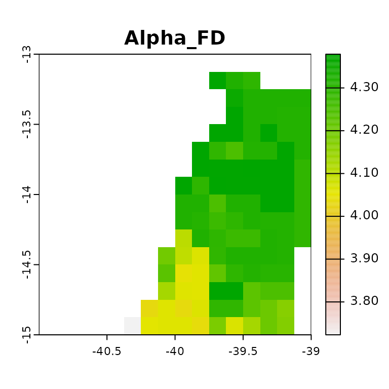 The alpha functional diversity for the first scenario ranges from 3.7 to 4.4, with higher values concentrated towards the north, indicating greater functional diversity.
2.1.3 Alpha PD
# Alpha PD calculation
alpha.pd <- divraster::spat.alpha(bin1, tree)
alpha.pd
#> class : SpatRaster
#> dimensions : 16, 16, 1 (nrow, ncol, nlyr)
#> resolution : 0.125, 0.125 (x, y)
#> extent : -41, -39, -15, -13 (xmin, xmax, ymin, ymax)
#> coord. ref. : lon/lat WGS 84 (EPSG:4326)
#> source(s) : memory
#> name : Alpha_PD
#> min value : 1523.921
#> max value : 1859.668
terra::plot(alpha.pd, main = names(alpha.pd))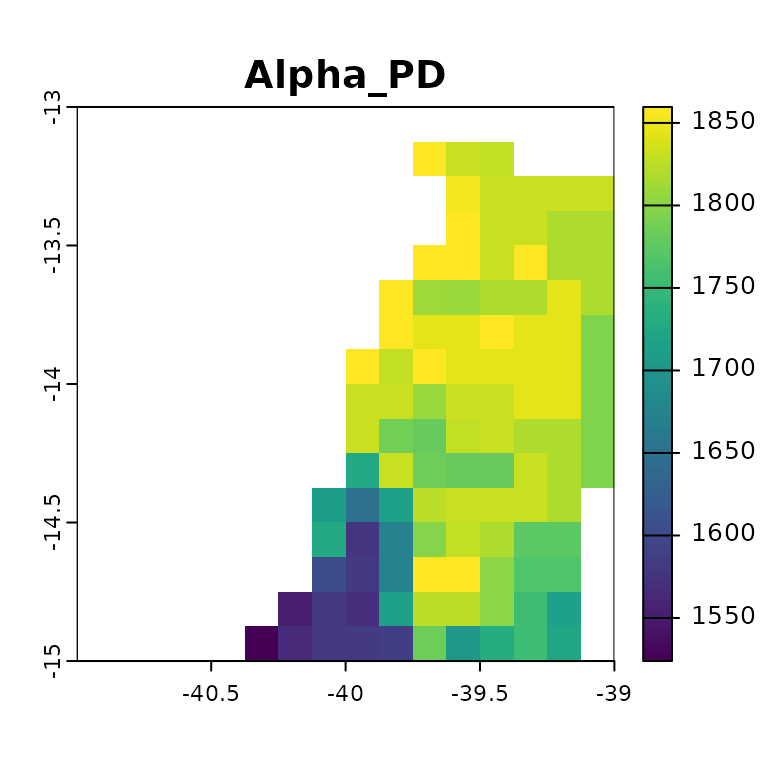 The alpha phylogenetic diversity for the first scenario ranges from 1524 to 1860, with higher values concentrated towards the north, indicating greater phylogenetic diversity.
3 Standardized effect size (SES)
SES is often used in ecological studies to measure the magnitude of
difference between observed and randomized patterns generated by null
models, expressed in standard deviation units. We calculate SES using
the SESraster package, which currently offers six community
randomization methods. The basic randomization methods include: keeping
the richness constant and randomizing the position of the species within
each raster cell (site), keeping range size constant and randomizing the
position of species presences in space (species), and randomizing by
both site and species simultaneously (both). A positive SES indicates
that the observed functional/phylogenetic diversity is higher than
expected solely based on species richness (taxonomic diversity), whereas
a negative SES indicates the opposite.
3.1.1 SES FD
# SES FD calculation
ses.fd <- divraster::spat.rand(x = bin1,
tree = traits,
aleats = 3,
random = "site")
ses.fd
#> class : SpatRaster
#> dimensions : 16, 16, 4 (nrow, ncol, nlyr)
#> resolution : 0.125, 0.125 (x, y)
#> extent : -41, -39, -15, -13 (xmin, xmax, ymin, ymax)
#> coord. ref. : lon/lat WGS 84 (EPSG:4326)
#> source(s) : memory
#> names : Mean_FD, SD_FD, Observed_FD, SES_FD
#> min values : 3.771885, 0.003211363, 3.723151, -17.575216
#> max values : 4.435286, 0.172341533, 4.378846, 2.132086
terra::plot(ses.fd, main = names(ses.fd))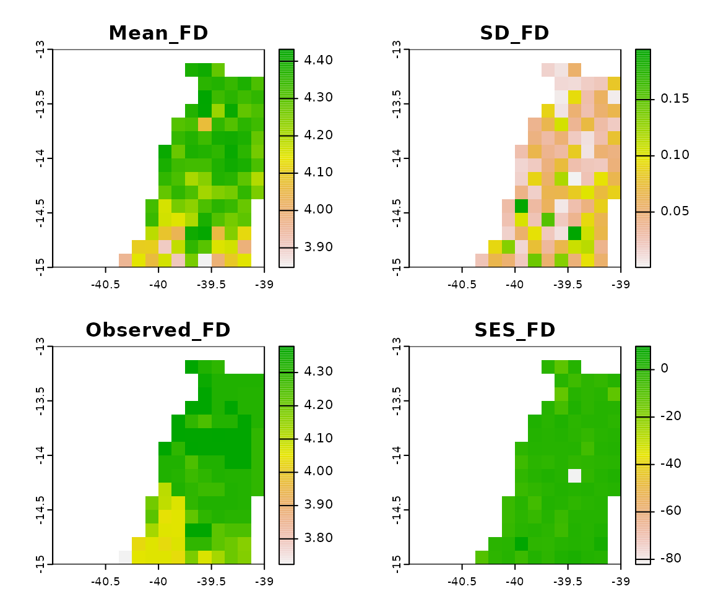 The SES indicates that the majority of the areas have values close to 0, suggesting that functional diversity does not significantly differ from the expected change. However, one community is projected to be functionally dispersed (SES_FD = 31), while another community is projected to be functionally clustered (SES_FD = -39). This indicates an increase and decrease in functional diversity within these communities from scenarios 1 to 2, respectively.
3.1.2 SES PD
# SES PD calculation
ses.pd <- divraster::spat.rand(x = bin1,
tree = tree,
aleats = 3,
random = "site")
ses.pd
#> class : SpatRaster
#> dimensions : 16, 16, 4 (nrow, ncol, nlyr)
#> resolution : 0.125, 0.125 (x, y)
#> extent : -41, -39, -15, -13 (xmin, xmax, ymin, ymax)
#> coord. ref. : lon/lat WGS 84 (EPSG:4326)
#> source(s) : memory
#> names : Mean_PD, SD_PD, Observed_PD, SES_PD
#> min values : 1645.989, 1.244739, 1623.451, -4.357277
#> max values : 1877.987, 73.910359, 1880.676, 10.178462
terra::plot(ses.pd, main = names(ses.pd))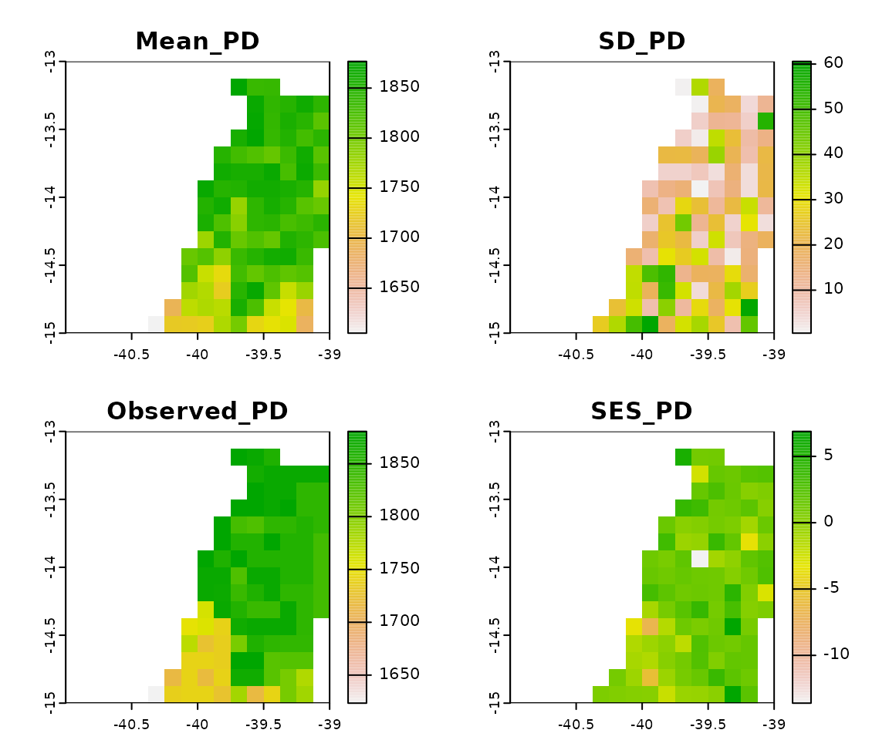 Similarly, the SES for phylogenetic diversity does not differ from what is expected by chance, with most communities presenting values close to 0. However, one community is projected to be phylogenetically dispersed (SES_PD = 10), while another community is projected to be phylogenetically clustered (SES_FD = -15). This indicates an increase and decrease in phylogenetic diversity within these communities from scenarios 1 to 2, respectively.
4 Beta diversity
Beta diversity captures variations in species composition between different communities. When examining a community in comparison to its neighboring ones, it is referred to as spatial beta diversity. On the other hand, when assessing changes within the same community over different time periods, it is termed temporal beta diversity. Beta diversity can further be partitioned into two components: “replacement” and “richness differences”. The former accounts for the substitution of one species with another, while the latter encompasses discrepancies in the total number of species (e.g. species gain or loss). Moreover, the concept of beta diversity extends to functional (FD) and phylogenetic diversity (PD), using the same framework as taxonomic diversity (TD). In the context of TD, higher beta diversity represents higher dissimilarities in species composition between communities. In contrast, for FD, it indicates higher dissimilarities in functional traits, and for PD, it reflects higher dissimilarities in phylogenetic relationships of species between communities.
4.1.1 Beta spatial TD
# Beta spatial TD calculation
beta.td <- divraster::spat.beta(bin1)
beta.td
#> class : SpatRaster
#> dimensions : 16, 16, 3 (nrow, ncol, nlyr)
#> resolution : 0.125, 0.125 (x, y)
#> extent : -41, -39, -15, -13 (xmin, xmax, ymin, ymax)
#> coord. ref. : lon/lat WGS 84 (EPSG:4326)
#> source(s) : memory
#> names : Btotal_TD, Brepl_TD, Brich_TD
#> min values : 0.006060606, 0.00000000, 0.004264392
#> max values : 0.109409606, 0.03638009, 0.103181683
terra::plot(beta.td, main = names(beta.td))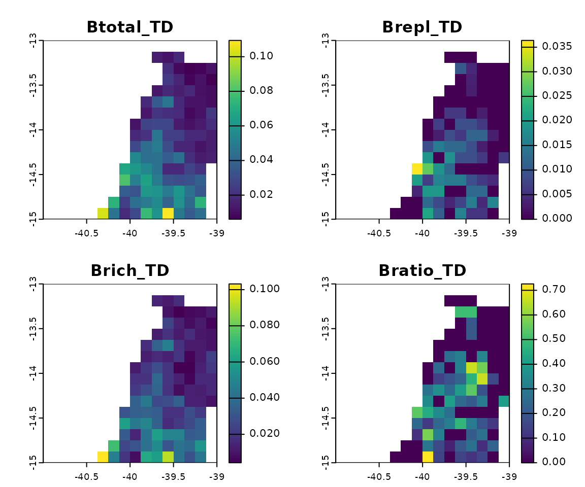 Spatial beta diversity for TD indicates a slight change in species composition towards the south, as evidenced by the small values of Btotal (~0.1). The predominant component contributing to this change is the richness difference (Brich), suggesting that dissimilarities between each community (i.e. pixel) and its neighbors are primarily due to the loss or gain of species.
4.1.2 Beta spatial FD
# Beta spatial FD calculation
beta.fd <- divraster::spat.beta(bin1, traits)
beta.fd
#> class : SpatRaster
#> dimensions : 16, 16, 3 (nrow, ncol, nlyr)
#> resolution : 0.125, 0.125 (x, y)
#> extent : -41, -39, -15, -13 (xmin, xmax, ymin, ymax)
#> coord. ref. : lon/lat WGS 84 (EPSG:4326)
#> source(s) : memory
#> names : Btotal_FD, Brepl_FD, Brich_FD
#> min values : 0.0004245858, 0.00000000, 0.0004245858
#> max values : 0.0793045655, 0.01846139, 0.0793045655
terra::plot(beta.fd, main = names(beta.fd)) Similarly, spatial beta diversity for FD indicates a slight change in
functional traits composition towards the south, as evidenced by the
small values of Btotal (~0.08). The predominant component contributing
to this little change is the richness difference (Brich), suggesting
that dissimilarities between each community (i.e. pixel) and its
neighbors are primarily due to the loss or gain of functional
traits.
Similarly, spatial beta diversity for FD indicates a slight change in
functional traits composition towards the south, as evidenced by the
small values of Btotal (~0.08). The predominant component contributing
to this little change is the richness difference (Brich), suggesting
that dissimilarities between each community (i.e. pixel) and its
neighbors are primarily due to the loss or gain of functional
traits.
4.1.3 Beta spatial PD
# Beta spatial PD calculation
beta.pd <- divraster::spat.beta(bin1, tree)
beta.pd
#> class : SpatRaster
#> dimensions : 16, 16, 3 (nrow, ncol, nlyr)
#> resolution : 0.125, 0.125 (x, y)
#> extent : -41, -39, -15, -13 (xmin, xmax, ymin, ymax)
#> coord. ref. : lon/lat WGS 84 (EPSG:4326)
#> source(s) : memory
#> names : Btotal_PD, Brepl_PD, Brich_PD
#> min values : 0.002851805, 0.000000000, 0.001618621
#> max values : 0.059656685, 0.008026876, 0.059656685
terra::plot(beta.pd, main = names(beta.pd))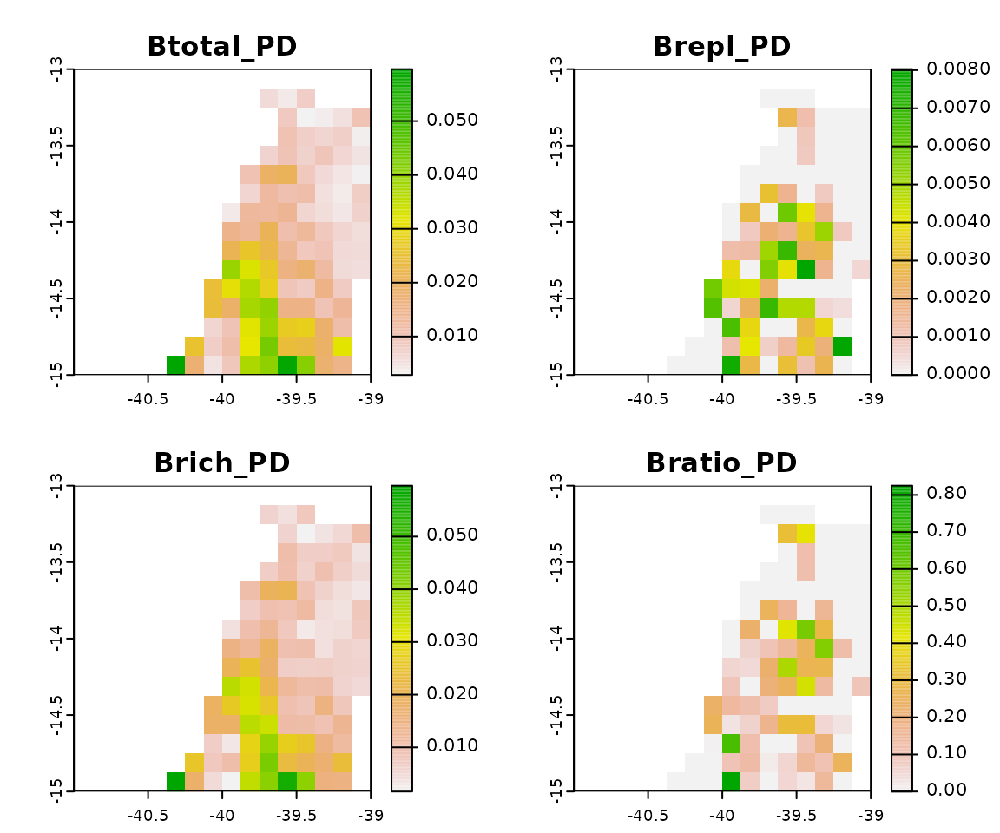 The spatial beta diversity for PD indicates a slight change in the evolutionary history of communities towards the south. However this change is even lower compared to TD and FD, as evidenced by the smallest values of Btotal (~0.06). The predominant component contributing to this little change is also the richness difference (Brich), suggesting that dissimilarities between each community (i.e. pixel) and its neighbors are due to the loss or gain of evolutionary history.
4.1.4 Beta temporal TD
# Beta temporal TD calculation
betatemp.td <- divraster::temp.beta(bin1, bin2)
betatemp.td
#> class : SpatRaster
#> dimensions : 16, 16, 3 (nrow, ncol, nlyr)
#> resolution : 0.125, 0.125 (x, y)
#> extent : -41, -39, -15, -13 (xmin, xmax, ymin, ymax)
#> coord. ref. : lon/lat WGS 84 (EPSG:4326)
#> source(s) : memory
#> names : Btotal_TD, Brepl_TD, Brich_TD
#> min values : 0.02985075, 0.00000000, 0.02985075
#> max values : 0.31578947, 0.09836066, 0.31578947
terra::plot(betatemp.td, main = names(betatemp.td))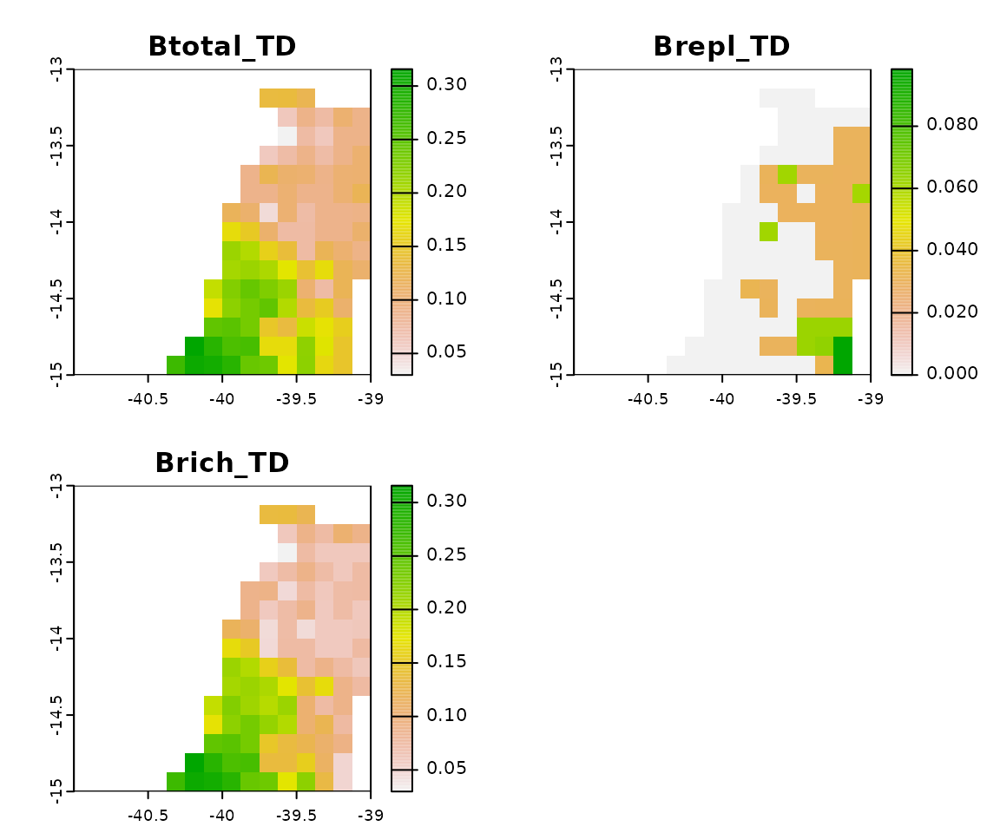 The temporal beta diversity for TD indicates that future communities are expected to experience changes in their species composition, predominantly towards the south, with Btotal reaching approximately 0.3. The predominance of the Brich component suggests that these dissimilarities are attributed to gains or losses of species.
4.1.5 Beta temporal FD
# Beta temporal FD calculation
betatemp.fd <- divraster::temp.beta(bin1, bin2, traits)
betatemp.fd
#> class : SpatRaster
#> dimensions : 16, 16, 3 (nrow, ncol, nlyr)
#> resolution : 0.125, 0.125 (x, y)
#> extent : -41, -39, -15, -13 (xmin, xmax, ymin, ymax)
#> coord. ref. : lon/lat WGS 84 (EPSG:4326)
#> source(s) : memory
#> names : Btotal_FD, Brepl_FD, Brich_FD
#> min values : 0.01733908, 0.00000000, 0.01012696
#> max values : 0.17031569, 0.03741327, 0.17031569
terra::plot(betatemp.fd, main = names(betatemp.fd))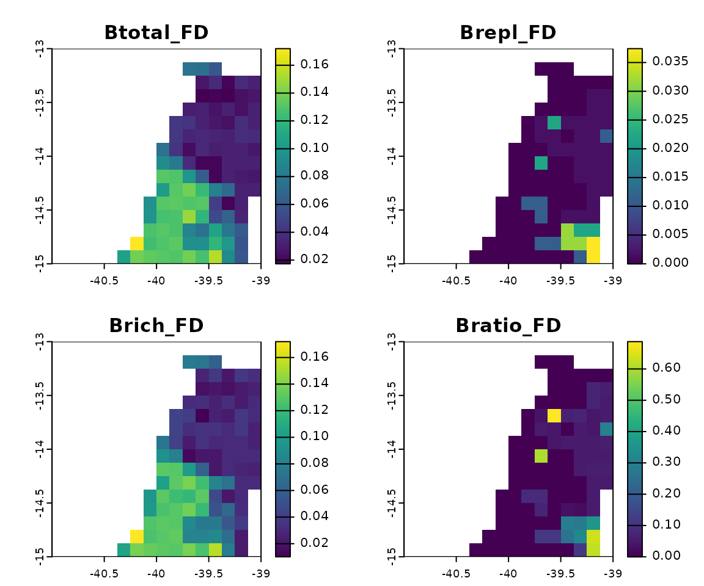 The temporal beta diversity for FD indicates a less pronounced pattern compared to TD, with smaller values of Btotal, reaching a maximum of only 0.17. The Brich component is also predominant, suggesting that the small dissimilarities can be attributed to gains or losses of functional traits.
4.1.6 Beta temporal PD
# Beta temporal PD calculation
betatemp.pd <- divraster::temp.beta(bin1, bin2, tree)
betatemp.pd
#> class : SpatRaster
#> dimensions : 16, 16, 3 (nrow, ncol, nlyr)
#> resolution : 0.125, 0.125 (x, y)
#> extent : -41, -39, -15, -13 (xmin, xmax, ymin, ymax)
#> coord. ref. : lon/lat WGS 84 (EPSG:4326)
#> source(s) : memory
#> names : Btotal_PD, Brepl_PD, Brich_PD
#> min values : 0.0120217, 0.0000000, 0.009533166
#> max values : 0.1792291, 0.0394096, 0.179229119
terra::plot(betatemp.pd, main = names(betatemp.pd))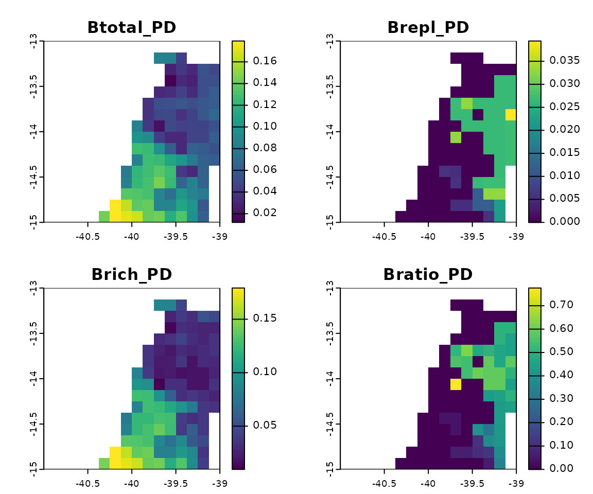 Likewise, the temporal beta diversity for PD indicates a less pronounced pattern compared to TD, with smaller values of Btotal, reaching a maximum of only 0.18. The Brich component is also predominant, suggesting that the small dissimilarities can be attributed to gains or losses of evolutionary history.
5 Traits average
Calculating the average traits of species for each climate scenario enables the evaluation of species traits that contribute the most to the loss of suitable habitat. Unlike functional diversity, which combines functional traits into an index, this approach provides direct insight into spatial variations in average traits. This information can complement the data necessary for delineating conservation priority areas, as shifts in average traits—whether increasing or decreasing—indicate the potential loss of species with specific features. This is of particular significance given that functional traits are closely tied to the ecological services provided by species.
5.1 Traits average examples
# Average traits calculation
# Scenario 1
avg.traits1 <- divraster::spat.trait(bin1, traits)
avg.traits1[[4]]
#> class : SpatRaster
#> dimensions : 16, 16, 1 (nrow, ncol, nlyr)
#> resolution : 0.125, 0.125 (x, y)
#> extent : -41, -39, -15, -13 (xmin, xmax, ymin, ymax)
#> coord. ref. : lon/lat WGS 84 (EPSG:4326)
#> source(s) : memory
#> name : Beak.Depth
#> min value : 8.526923
#> max value : 9.601515
terra::plot(avg.traits1[[4]], main = paste0(names(avg.traits1[[4]]), "_sce1"))
# Scenario 2
avg.traits2 <- divraster::spat.trait(bin2, traits)
avg.traits2[[4]]
#> class : SpatRaster
#> dimensions : 16, 16, 1 (nrow, ncol, nlyr)
#> resolution : 0.125, 0.125 (x, y)
#> extent : -41, -39, -15, -13 (xmin, xmax, ymin, ymax)
#> coord. ref. : lon/lat WGS 84 (EPSG:4326)
#> source(s) : memory
#> name : Beak.Depth
#> min value : 8.786792
#> max value : 9.942308
terra::plot(avg.traits2[[4]], main = paste0(names(avg.traits2[[4]]), "_sce2"))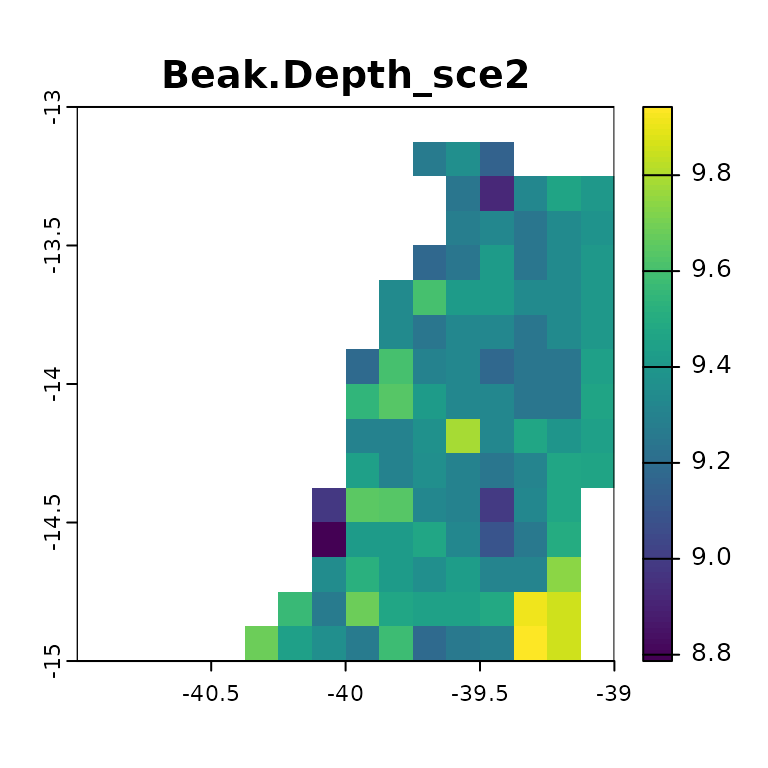
# Percentage of change
change.traits <- (avg.traits2 - avg.traits1) / avg.traits1 * 100
change.traits[[4]]
#> class : SpatRaster
#> dimensions : 16, 16, 1 (nrow, ncol, nlyr)
#> resolution : 0.125, 0.125 (x, y)
#> extent : -41, -39, -15, -13 (xmin, xmax, ymin, ymax)
#> coord. ref. : lon/lat WGS 84 (EPSG:4326)
#> source(s) : memory
#> name : Beak.Depth
#> min value : -4.495893
#> max value : 13.541296
terra::plot(change.traits[[4]], main = paste0(names(change.traits[[4]]), "_%"))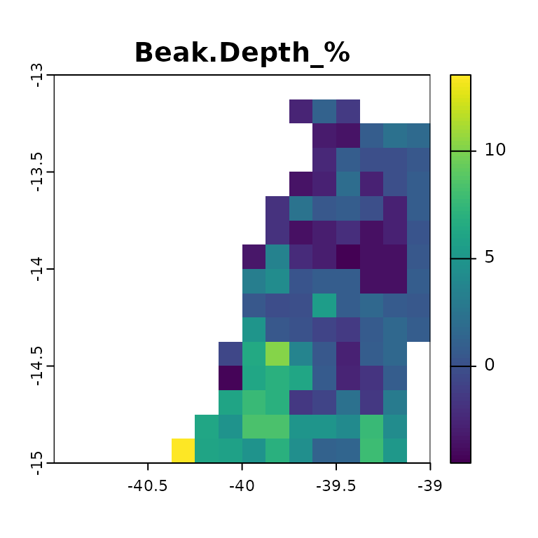 The average beak depth in the first scenario ranges from 8.5 to 9.6, while in the second scenario, it ranges from 8.8 to 9.9. Beak depth increased by 13.5% in the southern region but decreased by 4.5% in the central region. The earlier analysis indicated a prevalence of species loss, implying that the rise in average beak depth in the second scenario can be attributed to the decline of species with smaller beak depths. Conversely, the reduction in beak size can be attributed to the decline of species with larger beak depths.